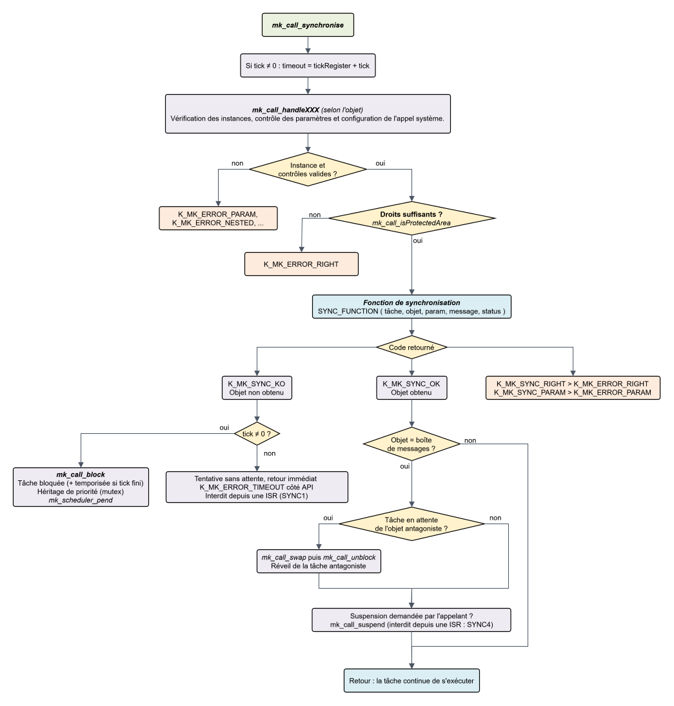

Modifier le noyau et créer des appels système
Le noyau Mk est conçu pour être modifié. Cet article présente les mécanismes essentiels à comprendre afin de pouvoir ajouter de nouveaux appels système, créer des objets de synchronisation ou modifier des objets.
Cet article est décomposé en trois parties. La première partie explique les mécanismes de protection du noyau contre les accès concurrents. La deuxième partie présente le mécanisme de création d'un appel système et la dernière partie se concentre sur la description du mécanisme de synchronisation.
1. La protection des accès concurrents
Le noyau s'appuie sur les trois exceptions matérielles suivantes pour gérer les accès concurrents :
| Exception | Priorité | Rôle | Fonction |
|---|---|---|---|
| SysTick | 15 | Incrémente le compteur de tick et déclenche l'exception PendSV. | _mk_scheduler_tick |
| PendSV | 15 | Réalise l'ordonnancement, les changements de contexte et le calcul de la charge CPU. | _mk_scheduler_switch |
| SVC | 7 | Exécute les appels système demandés par les tâches et les vecteurs d'interruption. | mk_scheduler_handle |
Le Cortex-M7 code les priorités sur 4 bits (0 correspond à la priorité la plus forte). Ces valeurs ont donc les conséquences suivantes :
- ✔ Les vecteurs d'interruption de priorité 0 à 7 ne sont pas autorisés à utiliser les services du noyau. Seuls les vecteurs de priorité 8 à 15 le peuvent.
- ✔ L'exception SVC étant la plus prioritaire, un appel système ne peut pas être interrompu par une tâche ou un autre vecteur d'interruption moins prioritaire.
Par ailleurs, la modification des structures du noyau étant centralisée dans le vecteur SVC et dans le vecteur PendSV, les mécanismes de protection des accès concurrents se limite à un simple masque d'interruption.
Les situations où le noyau masque les interruptions pour se prémenir d'un accès concurrent sont décrites ci-dessous :
- ✔ lors d'un changement de contexte.
- ✔ lors du déclenchement d'un appel système dans un vecteur d'interruption.
Lors de la définition d'un nouvel appel système et si celui-ci peut être exécutée dans un
vecteur d'interruption, il est alors nécessaire d'encadrer la requête SVC par les fonctions _
/* Entrée en section critique */ l_mask = _mk_scheduler_maskFromIsr ( K_MK_SCHEDULER_MASK_PRIORITY ); /* Déclenchement d'une requête SVC */ l_result = mk_semaphore_call ( p_mkSemaphore ); /* Sortie de la section critique */ _mk_scheduler_unmaskFromIsr ( l_mask );
La particularité des ces deux fonctions est qu'elles sont sans effet si elle n'ont pas été exécutées dans un vecteur d'interruption.
2. Les appels système
Les données du noyau sont stockées en mémoire privilégiée. Lorsqu'une tâche souhaite effectuer une action comme réveiller une autre tâche ou prendre un objet de synchronisation, celle-ci doit déclencher une appel système par le biais de l'exception SVC. Les tâches ne modifient donc pas directement les données du noyau. Elles se contentent de décrire une requête, de déclencher l'exception SVC puis de lire le résultat. Cette organisation garantit l'atomicité des opérations du noyau.
Une requête est décrite par une structure T_mkSVCObject constituée des 5 champs suivants :
struct T_mkSVCObject { uint32_t type; T_mkAddr data [ K_MK_SVC_OBJECT_SIZE ]; uint32_t status; T_mkCode result; T_mkAddr handle; };
La signification de chacun des champs est décrite ci-dessous :
| Champ | Rôle |
|---|---|
| type | Identifiant de l'appel système (T_ |
| data | Données de l'appel système. La signification de chaque case dépend du type de l'appel système. L'indice 0 est réservée au noyau. |
| status | Indique si la requête est en attente de traitement (K_MK_SVC_FILLED) ou non (K_MK_SVC_EMPTY). |
| result | Code de retour de l'appel système (T_mkCode). |
| handle | Instance de retour de l'appel système. |
Les champs result et handle sont écrit
par le noyau. Le champ statut est écrit par les fonctions mk_svc_set
(FILLED) et mk_
Le champ data est rempli à la fois par le noyau et par l'application conformément au type de l'appel système exécutée. La case 2 peut par exemple contenir une temporisation, une zone mémoire ou encore l'identifiant d'une tâche :
| Famille | Constante | Offset | Contenu |
|---|---|---|---|
| Tous | K_ |
0 | Adresse de la tâche courante, écrite par le noyau. |
| Synchro | K_ |
1 | Adresse de l'objet de synchronisation. |
| Synchro | K_ |
2 | Durée de la temporisation. |
| Synchro | K_ |
3 | Échéance de la temporisation, calculée par le noyau. |
| Synchro | K_ |
4 | Adresse de la fonction de synchronisation, écrite par le noyau. |
| Synchro | K_ |
5 | Adresse de la fonction de libération, écrite par le noyau. |
| Synchro | K_ |
6 | Paramètre propre à un objet (drapeaux d'un champ d'événements, boîte de messages...). |
| Synchro | K_ |
7 | Objet antagoniste (boîtes de messages), écrit par le noyau. |
| Synchro | K_ |
8 | Adresse du message ou du tampon à transférer. |
| Synchro | K_ |
9 | État de la tâche à l'issue de l'appel. |
| Création d'objets | K_ |
2 | Zone mémoire dans laquelle l'objet est alloué. |
| Création d'objets | K_ |
3 | Niveau de protection de l'objet. |
| Création d'objets | K_ |
4 | Type de l'objet ou de la tâche. |
| Création d'objets | K_ |
4 et 5 | Taille et nombre de blocs (pool, boîte de messages). |
| Création d'objets | K_ |
4 et 5 | Nombre de jetons initial et total d'un sémaphore. |
| Création de tâches | K_ |
1 à 9 | Instance, identifiant, priorité, type, propriétaire, point d'entrée, argument et pile de la tâche. |
Un objet SVC occupe 56 octets de mémoire (K_
Les objets SVC sont stockés dans la donnée g_
| Contexte d'exécution | Objet SVC utilisé | Protection de l'appel système |
|---|---|---|
| Tâche | task->svc | Priorité de l'exception SVC. Aucun masquage. |
| Vecteur d'interruption (priorité 8 à 15) | g_mkSVCObject (partagé) | Masquage BASEPRI à la priorité 8. |
Déroulement d'un appel système
Un appel système se déroule en plusieurs étape. La première étape consiste à remplir un objet SVC local avec les informations de l'appel système. Cet objet est ensuite transmis à la fonction mk_svc_set pour qu'il soit copier dans l'objet SVC correspondant à son contexte d'exécution (g_mkSVCObject ou task->svc).
L'interruption SVC est ensuite déclenchée via la fonction _mk_svc_call. Cette fonction exécute l'instruction SVC #0 si l'appel système a été réalisé depuis une tâche ou diffère le déclenchement de cette exception si l'appel système a été réalisé depuis une interruption.
L'exception SVC est alors exécutée par le biais de la fonction mk_
La fonction de
traitement
est alors exécutée en mode privilégié. Lorsque son travail est terminé, elle renseigne les champs result et handle de l'objet SVC. Elle déclenche alors un changement de contexte explicite avec la
fonction mk_
La fonction de l'API reprend ensuite la main (parfois bien plus tard si un changement de contexte s'est produit) et lit les champs result et handle pour déterminer le résultat de l'appel système.
La figure ci-dessous résume le parcours d'une requête de la fonction de l'API jusqu'à son traitement par le noyau :

La fonction mk_
| Plage | Famille | Fonction de traitement |
|---|---|---|
| 1000 | Création d'objets et de tâches | mk_ |
| 2000 | Suppression d'objets | mk_ |
| 3000 | Manipulation de tâches | mk_ |
| 4000 | Synchronisation (obtention d'un objet) | mk_ |
| 5000 | Désynchronisation (libération d'un objet) | mk_ |
⚠️
Un identifiant situé en dehors de ces plages est ignoré et ne produit aucun résultat.
Créer un appel système
La création d'un appel système nécessite les étapes suivantes :
- ✔ Ajouter un identifiant dans l'énumération T_
mkSVCIdentifier du fichier mk_svc_ .types.h - ✔ Si nécessaire, ajouter un offset dans l'énumération T_mkSVCOffset (la case 0 est réservée au noyau).
- ✔ Écrire la fonction de traitement mk_call_xxx et la déclarer dans le fichier mk_
call_ .private.h - ✔ Router la requête vers cette fonction dans la routine mk_
scheduler_ .handleSVC - ✔ Écrire la fonction de l'API.
L'exemple ci-dessous crée un appel système fictif qui incrémente un compteur partagé entre plusieurs tâches. L'opération est indivisible vis-à-vis des tâches et des vecteurs d'interruption de priorité 8 à 15 puisqu'elle s'exécute dans l'exception SVC. Les identifiants et les offsets sont d'abord déclarés :
/* mk_svc_types.h */ K_MK_SYSCALL_USER_FIRST_ID = 6000, K_MK_SYSCALL_USER_INCREMENT_FUNCTION = 6000, K_MK_SYSCALL_USER_LAST_ID = 6000, K_MK_OFFSET_USER_COUNTER = 1,
La requête est ensuite routée dans la fonction mk_
/* mk_scheduler_handle.c */ else if ( ( p_mkObject->type >= K_MK_SYSCALL_USER_FIRST_ID ) && ( p_mkObject->type <= K_MK_SYSCALL_USER_LAST_ID ) ) { /* Traitement de l'appel système */ mk_call_increment ( p_mkObject, p_mkStatus ); }
La fonction de traitement s'exécute en mode privilégié. Elle doit donc vérifier toutes les adresses
transmises par l'appelant, comme le fait la fonction mk_
/* mk_call_increment.c */ void mk_call_increment ( T_mkSVCObject* p_mkObject, uint32_t p_mkStatus ) { /* Déclaration d'une variable de travail */ uint32_t l_area; /* Récupération de l'adresse du compteur */ uint32_t* l_counter = ( uint32_t* ) p_mkObject->data [ K_MK_OFFSET_USER_COUNTER ]; /* Récupération du niveau d'exécution de la tâche courante */ uint32_t l_right = _mk_scheduler_privileged ( ); /* Actualisation de la variable de retour */ p_mkObject->result = K_MK_OK; /* Si l'adresse est valide */ if ( l_counter != K_MK_NULL ) { /* Récupération du type de la zone mémoire du compteur */ l_area = _mk_memory_isPrivilegedArea ( ( uint8_t* ) l_counter ); l_area |= _mk_memory_isPrivilegedArea ( ( uint8_t* ) l_counter + 3 ); /* Si une tâche non privilégiée tente de modifier une zone */ /* privilégiée */ if ( ( p_mkStatus == K_MK_ISR_NO ) && ( l_right == K_MK_MODE_THREAD ) && ( l_area != K_MK_AREA_UNPROTECTED ) ) { /* Déclenchement de la routine gérant les conflits */ mk_handler_rightFault ( ); /* Actualisation de la variable de retour */ p_mkObject->result = K_MK_ERROR_RIGHT; } /* Sinon */ else { /* Incrémentation du compteur */ ( *l_counter )++; } } /* Sinon */ else { /* Actualisation de la variable de retour */ p_mkObject->result = K_MK_ERROR_PARAM; } /* Retour */ return; }
Enfin, la fonction de l'API suit le modèle des autres fonctions du noyau. Elle encadre l'appel système par une section critique car elle peut être exécutée depuis un vecteur d'interruption :
/* mk_user_increment.c */ static T_mkCode mk_user_call ( uint32_t* p_counter ) { /* Déclaration d'un gestionnaire SVC */ T_mkSVCObject l_svc; /* Déclaration d'un pointeur SVC */ T_mkSVCObject* l_svcPnt; /* Ecriture du type de l'appel système dans le gestionnaire SVC */ l_svc.type = K_MK_SYSCALL_USER_INCREMENT_FUNCTION; /* Ecriture de l'adresse du compteur */ l_svc.data [ K_MK_OFFSET_USER_COUNTER ] = ( T_mkAddr ) ( p_counter ); /* Référencement de l'appel système dans le gestionnaire SVC */ l_svcPnt = mk_svc_set ( &l_svc ); /* Déclenchement d'un appel système */ _mk_svc_call ( ); /* Retour */ return ( l_svcPnt->result ); } T_mkCode mk_user_increment ( uint32_t* p_counter ) { /* Déclaration des variables de travail */ T_mkCode l_result = K_MK_ERROR_PARAM; uint32_t l_mask; /* Si le paramètre est valide */ if ( p_counter != K_MK_NULL ) { /* Entrée en section critique (sans effet en mode Thread) */ l_mask = _mk_scheduler_maskFromIsr ( K_MK_SCHEDULER_MASK_PRIORITY ); /* Déclenchement d'une requête SVC */ l_result = mk_user_call ( p_counter ); /* Sortie de la section critique */ _mk_scheduler_unmaskFromIsr ( l_mask ); } /* Retour */ return ( l_result ); }
⚠️
Une fonction de traitement ne doit jamais se bloquer car elle s'exécute dans l'exception SVC.
⚠️
Un appel système devant bloquer la tâche appelante doit utiliser le mécanisme de synchronisation décrit dans la section suivante.
3. La synchronisation des tâches
L'ensembles des objets de synchronisation partagent le même mécanisme de blocage et de réveil des tâches. Ce mécanisme n'est implémenté qu'une fois dans le noyau et chaque objet définit seulement ses fonctions d'obtention et de libération. Ces fonctions sont réparties dans deux familles d'appels système :
- ✔ La famille de synchronisation
(identifiants en 4000). Elle est gérée par la fonction mk_
call_ et regroupe les appels qui tentent d'obtenir un objet. Lorsque l'objet n'est pas disponible la tâche est bloquée.synchronise - ✔ La famille de désynchronisation
(identifiants en 5000). Elle est gérée par la fonction mk_
call_ et regroupe les appels qui libèrent un objet. Si des tâches attendent cet objet, la plus prioritaire est réveillée.unblock
Chaque objet fournit une fonction de synchronisation et une fonction de libération. Le tableau suivant liste les fonctions utilisées par chaque appel système :
| Fonction de l'API | Fonction de synchronisation | Fonction de libération |
|---|---|---|
| mk_mutex_take | mk_mutex_lock | - |
| mk_mutex_release | mk_mutex_lock (réveil) | mk_ |
| mk_semaphore_take | mk_ |
- |
| mk_semaphore_release | mk_ |
mk_ |
| mk_pool_allocSafe | mk_pool_take | - |
| mk_pool_freeSafe | mk_pool_take (réveil) | mk_ |
| mk_event_wait | mk_ |
- |
| mk_event_clear | mk_event_raz | - |
| mk_event_set | mk_ |
mk_ |
| mk_mail_post | mk_mail_set | mk_mail_get (appliquée à la tâche réveillée) |
| mk_mail_pend | mk_mail_get | mk_mail_set (appliquée à la tâche réveillée) |
Les fonctions marquées « réveil » sont exécutées suite à la libération d'un objet sur les tâches bloquées en attente de cet objet.
La disposition mémoire des objets
Le code générique du module de synchronisation ne connaît pas le type des objets qu'il manipule. Il doit donc accèder aux attributs des différents objets en utilisant leur position :
- ✔ le mot à l'indice 0 contient le type de l'objet.
- ✔ le mot à l'indice 3 contient la liste des tâches bloquées de l'objet.
- ✔ Pour un mutex, le mot à l'indice 2 contient l'adresse de la tâche propriétaire.
La table ci-dessous contient les quatre premiers champs des objets de synchronisation existant :
| Structure | Mot 0 | Mot 1 | Mot 2 | Mot 3 |
|---|---|---|---|---|
| T_mkMutex | type | lock | owner | pendingList |
| T_mkSemaphore | type | token | tokenNumber | pendingList |
| T_mkEvent | type | bypass | flag | pendingList |
| T_mkMailSynchro (poster et pender) | type | item | reserved | pendingList |
| T_mkPool | type | current | size | pendingList |
Chaque objet de synchronisation doit donc placer correctement ses champs dans sa structure. Le type doit occuper le premier mot et la liste des tâches bloquées doit occuper le quatrième mot. Si un objet n'utilise pas les mots deux et trois, il doit tout de même réserver leur emplacement (champs reserved ou bypass).
Les types d'objet
Le champ type combine
l'identifiant des objets de synchronisation (énumération T_mkTaskSync),
le bit de protection K_
Les fonctions de synchronisation
Toutes les fonctions de synchronisation et de libération respectent le prototype ci-dessous :
typedef uint32_t ( *T_mkSyncFunction ) ( T_mkAddr, /* Adresse de la tâche */ T_mkAddr, /* Adresse de l'objet présent à l'offset K_MK_OFFSET_SYNC_HANDLE */ T_mkAddr, /* Adresse de l'objet présent à l'offset K_MK_OFFSET_PARAM_OBJECT */ T_mkAddr, /* Adresse de l'objet présent à l'offset K_MK_OFFSET_MESSAGE */ uint32_t ); /* Statut d'interruption (p_mkStatus) */
La valeur de retour appartient à l'énumération T_mkSVCSync et possède les valeurs suivantes :
| Code | Signification |
|---|---|
| K_MK_SYNC_KO | L'objet n'a pas pu être obtenu. |
| K_MK_SYNC_OK | L'objet a été obtenu (ou libéré). |
| K_MK_SYNC_INHIB | Aucune synchronisation n'est requise. Ce code est utilisé lorsqu'une tâche en attente ne doit pas être réveillée. |
| K_MK_SYNC_RIGHT | La fonction n'a pas été exécutée car les permissions sont insuffisantes (boîtes de messages). |
| K_MK_SYNC_PARAM | La fonction n'a pas été exécutée car un paramètre est invalide (corruption d'une pool). |
Les fonctions de synchronisation doivent respecter les règles suivantes :
- ✔ Le premier paramètre contient l'adresse de la tâche ayant déclenchée l'appel système. Celui-ci est nul lorsque l'appel provient d'un vecteur d'interruption ou lorsque la fonction exécutée est une fonction de libération.
- ✔ A l'exception des fonctions de libération, le résultat d'une fonction de synchronisation doit être enregistré dans le champ synchro.object de la tâche ayant déclenchée l'appel système. Il prend comme valeur l'adresse de l'objet si celui-ci a été obtenu ou la valeur nulle en cas d'échec.
- ✔ Lorsque le noyau réveille une tâche suite à une libération, le paramètre
K_
MK_ de la fonction prend la valeur du champ synchro.message de la tâche réveillée. La fonction de synchronisation peut alors terminer son opération. Par exemple, copier un message pour une boîte ou enregistrer l'adresse du bloc allouée pour une pool.OFFSET_ MESSAGE
La récupération du résultat
Suite à l'appel système, les champs synchro.object et svc.result permettent de connaître le résultat de l'appel système :
| Valeur de svc.result | Valeur de synchro.object | Signification |
|---|---|---|
| K_MK_OK | Adresse de l'objet | L'objet a été obtenu. |
| K_MK_OK | K_MK_NULL | L'objet n'a pas été obtenu (tentative sans attente ou échéance de la temporisation). |
| K_MK_OK | K_MK_INVALID_HANDLE | L'objet a été supprimé pendant que la tâche était bloquée. |
| K_MK_ERROR_* | - | Une erreur s'est produite durant l'appel système. |
La fonction mk_call_synchronise
La fonction mk_

Dans un premier temps, la fonction mk_
- ✔ Elles vérifient d'abord que l'adresse de l'objet est valide et que celui-ci n'a pas été supprimé.
- ✔ Elles réalisent ensuite les contrôles propres au type d'objet.
- ✔ Enfin, elles renseignent les adresses des fonctions et des objets de synchronisation dans l'objet SVC.
La fonction contrôle ensuite les droits de la tâche avec la routine mk_
- ✔ L'objet est obtenu (K_
MK_ ) et la tâche poursuit son exécution. Pour une boîte de messages, le noyau réveille la tâche éventuellement en attente de l'objet antagoniste.SYNC_ OK - ✔ L'objet
n'est pas disponible (K_
MK_ et la temporisation est non nulle, la fonction mk_call_block est alors exécutée.SYNC_ KO) - ✔L'objet
n'est pas disponible (K_
MK_ et la temporisation est nulle. La tâche n'attend pas et l'appel système retourne immédiatement. Si celui-ci provient d'un vecteur d'interruption, une erreur est déclenchée.SYNC_ KO)
La fonction mk_call_block réalise les opérations suivantes :
- ✔ Elle positionne l'état de la tâche à K_
MK_ et mémorise l'adresse de l'objet dans synchro.object, la durée, et l'échéance de la temporisation.STATE_ BLOCKED - ✔ Elle retire la tâche de sa liste et actualise le registre de priorité si cette liste devient vide.
- ✔ Elle insère la tâche dans la liste des tâches bloquées de l'objet.
- ✔ Si la tâche doit être suspendue après l'envoi d'un message, elle
ajoute
l'état K_
MK_ .STATE_ SUSPENDED - ✔ Si la temporisation n'est pas infinie, elle ajoute l'état
K_
MK_ et insère la tâche dans la liste des tâches temporisées. La tâche appartient alors à deux listes distinctes.STATE_ DELAYED - ✔ Elle exécute l'héritage de priorité si l'objet est un mutex.
- ✔ Elle réalise un changement de contexte inconditionnel.
La fonction mk_call_unblock
La fonction mk_

Comme pour la fonction précédente, les routines mk_
- ✔ Elle exécute d'abord la fonction de libération afin que l'objet redevienne disponible.
- ✔ Si nécessaire, elle restitue la priorité de base de la tâche suite à héritage de priorité.
- ✔ Elle analyse ensuite la première tâche dans la liste d'attente de l'objet. Si celle-ci n'est pas vide, elle exécute alors la fonction de synchronisation avec cette tâche.
- ✔ Si cette fonction retourne K_
MK_ , la tâche obtient l'objet de synchronisation puis est soit réveillée (mk_SYNC_ OK call_ ), soit suspendue (mk_wakeTask call_ ). Un changement de contexte est demandé si la tâche réveillée est plus prioritaire que la tâche courante.suspend - ✔ Si la fonction retourne K_
MK_ , la tâche reste bloquée et la tâche suivante est examinée.SYNC_ INHIB - ✔ Pour les types d'objet dont le bit 0 est positionné, la boucle de synchronisation recommence tant que la liste n'a pas été entièrement parcourue. Pour les autres objets, seule la tâche la plus prioritaire est réveillée.
Les erreurs de synchronisation
Un code de retour inattendu d'une fonction de synchronisation signale une incohérence dans l'objet ou dans les données du noyau. Celui-ci les traitent donc comme une erreur critique :
| Erreur | Origine |
|---|---|
| K_MK_ERROR_SYNC1 | Une tentative de synchronisation sans attente a échoué depuis un vecteur d'interruption
malgrè les contrôles
réalisés en amont (mk_ |
| K_MK_ERROR_SYNC2 | La fonction de libération a retourné un code différent de K_MK_SYNC_OK, K_ |
| K_MK_ERROR_SYNC3 | La fonction de synchronisation appliquée à une tâche bloquée a retourné un code
différent de
K_MK_SYNC_OK et K_ |
| K_MK_ERROR_SYNC4 | Une suspension a été demandée depuis un vecteur d'interruption après l'envoi d'un
message malgrè les contrôles réalisés en amont
(mk_ |
Le traitement de ces erreurs est décrit dans l'article Traiter les erreurs avec les gestionnaires.
Les objets antagonistes
Une boîte de messages contient deux objets de synchronisation distincts qui contienne chacun leur propre liste de tâches bloquées (le poster pour l'écriture et le pender pour la lecture). Un post attend un emplacement libre alors qu'un pend attend un message. Les deux objets sont antagonistes et chaque opération réussie peut débloquer une tâche qui attend l'autre.
La fonction mk_
- ✔ Un post exécute mk_mail_set sur l'objet poster
puis si
une tâche est en attente sur l'objet pender, permute les
objets et
les fonctions de synchronisation (mk_call_swap) et appelle la routine
mk_
call_ . La fonction mk_mail_get est alors appliquée à la tâche en attente.unblock - ✔ Un pend suit le chemin inverse, mk_mail_get libère un emplacement puis mk_mail_set est appliquée à une éventuelle tâche en attente sur l'objet poster.
Les fonctions utilitaires
La table ci-dessous contient un ensemble de fonctions utilitaires qui peuvent être utilisées pour développer de nouveaux appels système ou de nouveaux objets de synchronisation :
| Fonction | Rôle |
|---|---|
| mk_svc_set | Copie l'objet SVC local dans l'objet de la tâche courante, ou dans g_mkSVCObject depuis un vecteur d'interruption. |
| _mk_svc_call | Déclenche l'exception SVC (instruction SVC #0 ou bit SVCALLPENDED). |
| mk_svc_available | Sélectionne l'objet SVC à traiter, y écrit la tâche courante, retourne son statut puis le réinitialise. |
| mk_scheduler_isr | Retourne le numéro du vecteur d'interruption en cours (K_MK_ISR_NO depuis une tâche). |
| _mk_scheduler_privileged | Retourne le niveau d'exécution de la tâche courante (K_MK_MODE_THREAD pour une tâche non privilégiée). |
| _mk_scheduler_maskFromIsr _mk_scheduler_unmaskFromIsr |
Masque le registre BASEPRI. Sans effet depuis une tâche. |
| mk_scheduler_pend | Demande un changement de contexte en déclenchant l'exception PendSV. |
| mk_call_type | Lit le type d'un objet de synchronisation (mot 0 de sa structure). |
| mk_call_isValidHandle | Vérifie qu'une adresse désigne bien une instance d'objet (plage d'adresses et alignement). |
| mk_call_isProtectedArea | Contrôle que l'appelant possède les droits nécessaires pour manipuler un objet protégé. |
| _mk_memory_isPrivilegedArea | Indique si une adresse est située en mémoire privilégiée. Sert à valider les pointeurs fournis par l'application. |
| mk_pool_alloc mk_pool_free |
Allouent et libèrent des blocs de taille fixe du noyau (instances d'objets, items de boîtes de messages). |
| mk_list_add mk_list_addPriority mk_list_addTimeout |
Insèrent une tâche dans une liste : liste des tâches prêtes, liste des tâches bloquées triée par priorité, liste des tâches temporisées triée par échéance. |
| mk_list_remove | Retire une tâche d'une liste (prêtes, bloquées ou temporisées). |
| mk_call_block | Bloque la tâche courante sur un objet de synchronisation, avec ou sans temporisation. |
| mk_call_wakeTask | Réveille une tâche bloquée et demande un changement de contexte si elle est plus prioritaire que la tâche courante. |
| mk_call_inherit mk_call_swapList |
Réalisent l'héritage de priorité d'un mutex et déplacent la tâche propriétaire dans la liste correspondant à sa nouvelle priorité. |
| mk_call_increasePriority mk_call_decreasePriority |
Actualisent le registre de priorité de l'ordonnanceur lorsqu'une liste de tâches prêtes devient non vide ou vide. |
| mk_handler_rightFault mk_handler_kernelFault |
Traitent respectivement une violation de droits et une erreur critique du noyau (K_MK_ERROR_SYNC1 à K_MK_ERROR_SYNC4 par exemple). |